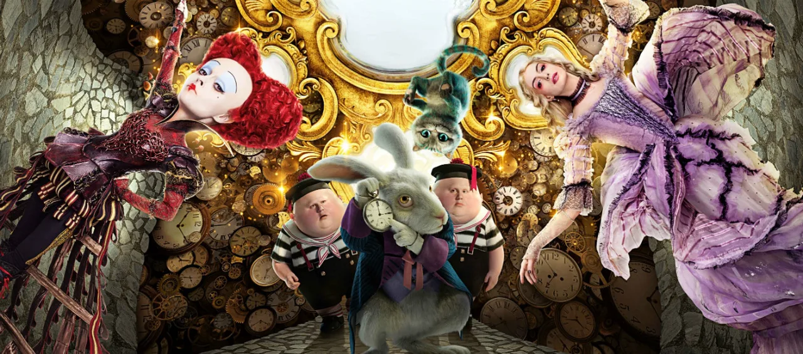
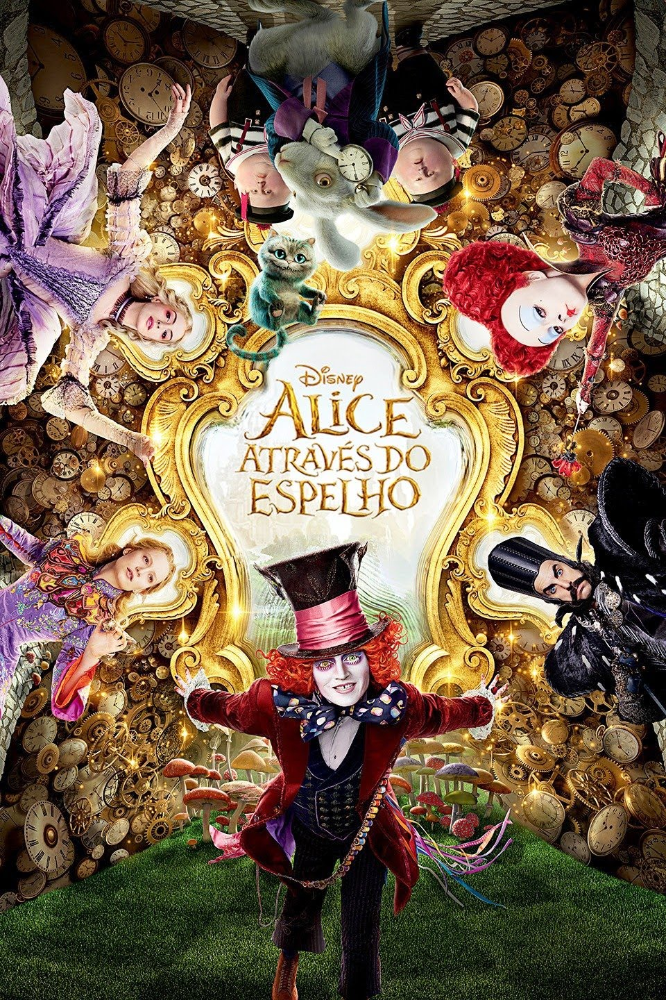

Alice retorna após uma longa viagem pelo mundo, e reencontra a mãe. No casarão de uma grande festa, percebe a presença de um espelho mágico. A jovem atravessa o objeto e retorna ao País das Maravilhas, onde descobre que o Chapeleiro Maluco e sua família correm risco de morte. Para salvar o amigo, Alice deve conversar com o Tempo para voltar às vésperas de um evento traumático e mudar seus destinos cruéis.
Foi lançado em: 26 de maio de 2016 (Brasil)
Foi dirigido por: James Bobin
